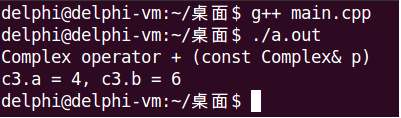
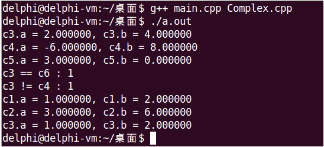
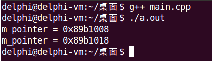

目录
操作符重载的本质是用特殊形式的函数扩展操作符的功能
operator关键字定义操作符重载函数在进行操作符重载时，必须遵循以下三条规则
全局函数和成员函数都可以实现对操作符的重载，重载为全局函数的语法规则为
/*
* Sign为预定义的操作符，如：+, -, *, /;
* lp和rp分别为左操作数和右操作数.
*/
Type operator Sign (const Type &lp, const Type &rp)
{
}如果重载为全局函数，则需要在友元的辅助下才能实现，因此，一般选择将操作符重载为类的成员函数
class Type
{
public:
Type operator Sign (const Type &rp)
{
}
};#include <stdio.h>
class Complex
{
int a;
int b;
public:
Complex(int a = 0, int b = 0)
{
this->a = a;
this->b = b;
}
int getA()
{
return a;
}
int getB()
{
return b;
}
Complex operator + (const Complex &p)
{
Complex ret;
printf("Complex operator + (const Complex& p)\n");
ret.a = this->a + p.a;
ret.b = this->b + p.b;
return ret;
}
friend Complex operator + (const Complex &p1, const Complex &p2);
};
Complex operator + (const Complex &p1, const Complex &p2)
{
Complex ret;
printf("Complex operator + (const Complex& p1, const Complex& p2)\n");
ret.a = p1.a + p2.a;
ret.b = p1.b + p2.b;
return ret;
}
int main()
{
Complex c1(1, 2);
Complex c2(3, 4);
Complex c3 = c1 + c2; // c1.operator + (c2)
printf("c3.a = %d, c3.b = %d\n", c3.getA(), c3.getB());
return 0;
}
下面，我们通过一个复数类，来分别实现算术运算操作符、比较操作符和赋值操作符的重载，以下是头文件和源文件的非重载部分代码。
Complex.h
#ifndef _COMPLEX_H_
#define _COMPLEX_H_
class Complex
{
double a;
double b;
public:
Complex(double a = 0, double b = 0);
double getA();
double getB();
double getModulus();
Complex operator + (const Complex &c);
Complex operator - (const Complex &c);
Complex operator * (const Complex &c);
Complex operator / (const Complex &c);
bool operator == (const Complex &c);
bool operator != (const Complex &c);
Complex &operator = (const Complex &c);
};
#endifComplex.cpp
#include "Complex.h"
#include <cmath>
Complex::Complex(double a, double b)
{
this->a = a;
this->b = b;
}
double Complex::getA()
{
return a;
}
double Complex::getB()
{
return b;
}
double Complex::getModulus()
{
return sqrt(a * a + b * b);
}Complex.cpp
Complex Complex::operator + (const Complex &c)
{
Complex ret;
ret.a = a + c.a;
ret.b = b + c.b;
return ret;
}
Complex Complex::operator - (const Complex &c)
{
Complex ret;
ret.a = a - c.a;
ret.b = b - c.b;
return ret;
}
Complex Complex::operator * (const Complex &c)
{
Complex ret;
ret.a = a * c.a - b * c.b;
ret.b = a * c.b + b * c.a;
return ret;
}
Complex Complex::operator / (const Complex &c)
{
Complex ret;
double cm = c.a * c.a + c.b * c.b;
ret.a = (a * c.a + b * c.b) / cm;
ret.b = (b * c.a - a * c.b) / cm;
return ret;
}Complex.cpp
bool Complex::operator == (const Complex &c)
{
return (a == c.a) && (b == c.b);
}
bool Complex::operator != (const Complex &c)
{
return !(*this == c);
}Complex.cpp
Complex &Complex::operator = (const Complex &c)
{
if (this != &c)
{
a = c.a;
b = c.b;
}
return *this;
}注意，赋值操作符有几点特殊之处：
a = b = cmain.cpp
#include "Complex.h"
#include <cstdio>
int main()
{
Complex c1(1, 2);
Complex c2(3, 6);
Complex c3 = c2 - c1;
Complex c4 = c1 * c3;
Complex c5 = c2 / c1;
printf("c3.a = %f, c3.b = %f\n", c3.getA(), c3.getB());
printf("c4.a = %f, c4.b = %f\n", c4.getA(), c4.getB());
printf("c5.a = %f, c5.b = %f\n", c5.getA(), c5.getB());
Complex c6(2, 4);
printf("c3 == c6 : %d\n", c3 == c6);
printf("c3 != c4 : %d\n", c3 != c4);
(c3 = c2) = c1;
printf("c1.a = %f, c1.b = %f\n", c1.getA(), c1.getB());
printf("c2.a = %f, c2.b = %f\n", c2.getA(), c2.getB());
printf("c3.a = %f, c3.b = %f\n", c3.getA(), c3.getB());
return 0;
}
赋值操作符重载和拷贝构造函数具有相同的作用和意义，那么，C++什么时候调用赋值操作符重载函数？什么时候调用拷贝构造函数？
ClassName c1;
ClassName c2 = c1; //调用拷贝构造函数
ClassName c3(c1); //调用拷贝构造函数
ClassName c4;
c4 = c1; //调用赋值操作符重载函数和拷贝构造函数类似
作为一般性原则，重载赋值操作符，必然需要实现深拷贝！！！
#include <iostream>
#include <string>
using namespace std;
class Test
{
int *m_pointer;
public:
Test()
{
m_pointer = NULL;
}
Test(int i)
{
m_pointer = new int(i);
}
/*拷贝构造函数实现深拷贝*/
Test(const Test &obj)
{
m_pointer = new int(*obj.m_pointer);
}
/*重载赋值操作符实现深拷贝*/
Test &operator = (const Test &obj)
{
if (this != &obj)
{
delete m_pointer;
m_pointer = new int(*obj.m_pointer);
}
return *this;
}
void print()
{
cout << "m_pointer = " << hex << m_pointer << endl;
}
~Test()
{
delete m_pointer;
}
};
int main()
{
Test t1 = 1;
Test t2;
t2 = t1;
t1.print();
t2.print();
return 0;
}
IntArray.h
#ifndef _INTARRAY_H_
#define _INTARRAY_H_
class IntArray
{
public:
IntArray &operator = (const IntArray &obj); //Add
};
#endifIntArray.cpp
IntArray &IntArray::operator = (const IntArray &obj)
{
if (this != &obj)
{
int *pointer = new int[obj.m_length];
if (pointer != NULL)
{
for (int i = 0; i < obj.m_length; i++)
{
pointer[i] = obj.m_pointer[i];
}
m_length = obj.m_length;
delete m_pointer;
m_pointer = pointer;
}
}
return *this;
}